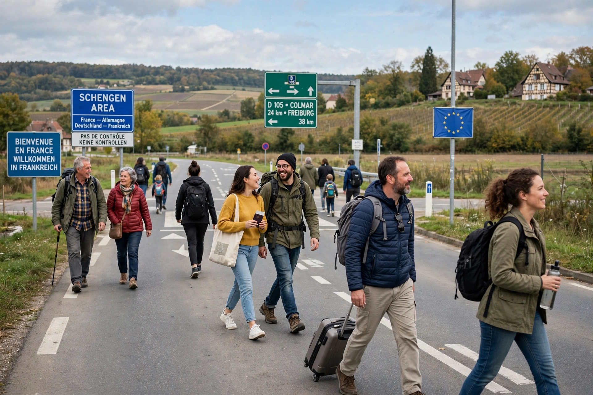

| Freedom of movement | |
|---|---|
 Movement across an open border | |
| Recognized in | Universal Declaration of Human Rights, Art. 13 |
| Related rights | Right of abode, free movement of workers |
Freedom of movement, mobility rights, or the right to travel is a human rights concept encompassing the right of individuals to travel from place to place within the territory of a country, and to leave the country and return to it. The right includes not only visiting places, but also changing the place where the individual resides or works.
Article 13 of the Universal Declaration of Human Rights (1948) states that everyone has the right to freedom of movement and residence within the borders of each state, and that everyone has the right to leave any country, including their own, and to return to their country. Article 12 of the International Covenant on Civil and Political Rights incorporates these rights into treaty law, while permitting restrictions provided by law and necessary to protect national security, public order, public health or morals, or the rights of others.
The most extensive regime is that of the European Union, where freedom of movement for workers and citizens is one of the "four freedoms" of the single market, complemented by the Schengen Area's abolition of internal border controls. Other arrangements include the Trans-Tasman Travel Arrangement between Australia and New Zealand, the Common Travel Area of the United Kingdom and Ireland, and free movement within the Nordic Passport Union.
Freedom of movement is commonly limited by requirements for passports and visas, by public-health measures such as quarantine, by criminal-law restrictions such as probation conditions, and historically by systems such as internal passports and the Soviet propiska. During the COVID-19 pandemic, many states imposed sweeping travel restrictions that tested the limits of the right.
Categories: Human rights · Civil liberties · Immigration